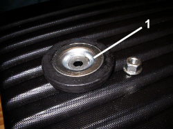
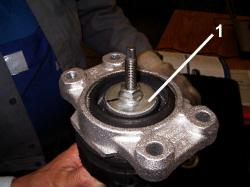

4420AG CHECK OF DAMPER CORRECT ORIENTATION
- Path
- Test > 44 SUSPENSION AND WHEELS > 4420 REAR SUSPENSION > 4420A REAR DAMPERS AND SPRINGS > 4420AG CHECK OF DAMPER CORRECT ORIENTATION
- Kind
- test / check procedure
- Applies to
- all engines; all production periods
- Interactive page
- https://sloeber94.github.io/elrnDB/#/939010254
Applies to: all engines; all production periods
Remove the luggage compartment interior lining side panels.
- Carry out op.
Op. 7040B18 LOAD COMPARTMENT LOAD PLATFORM SIDE TRIM ONE LH OR RH - R.R
1. Check that the buffer plate is fitted in the correct position as illustrated in the diagram.

Applies to: all engines; all production periods
1. If the plate is not fitted in the correct position, refit it correctly as illustrated in the diagram.
